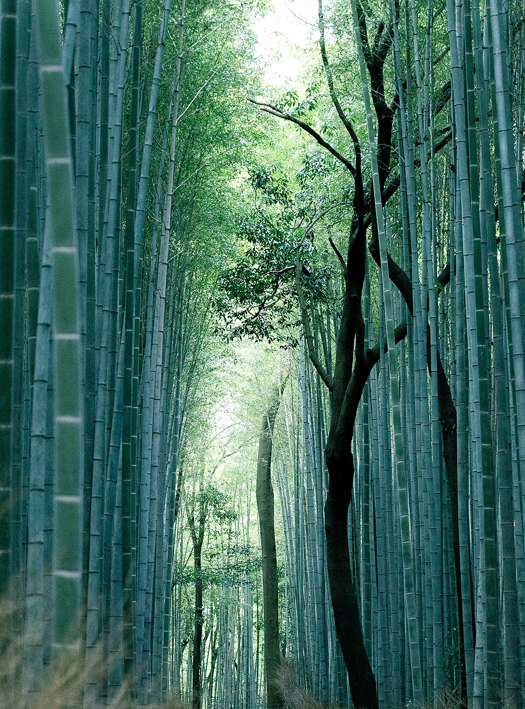
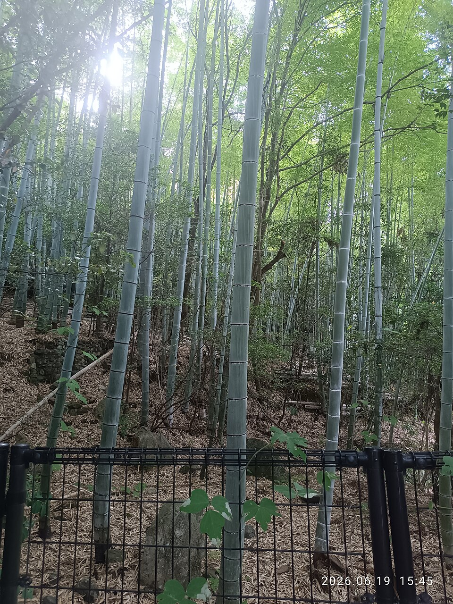
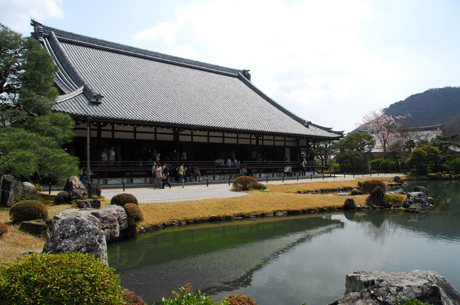

Бамбуковая роща Arashiyama и Tenryu-ji
Запад · ~15-20 мин, JR Sagano line до Saga-Arashiyama от отеля



Sagano Bamboo Grove - 500-метровая тропа среди бамбуковых стволов высотой до 20 м, звук скрипа бамбука на ветру входит в список «100 звуковых пейзажей Японии». У входа в рощу - Tenryu-ji, храм 1339 года, объект ЮНЕСКО, с садом Sogen-chi XIV века в стиле «заимствованного пейзажа»: гора Arashiyama служит ему фоном.
Роща: бесплатно, круглосуточно. Tenryu-ji: 8:30-17:00, сад ~¥500. Людно утром из-за автобусных туров, тише после 16:00.
Рядом


Фото: Wikimedia Commons (лицензии под каждым фото). Часы и цены проверены 20.10.2026 по путеводителям и официальным сайтам - перепроверь перед визитом, сезонно меняются. ← ко всем местам